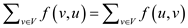
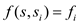
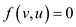
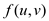
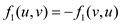
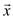
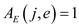

Equivalent network on splitting an edge:
Consider the flow network , which contains an edge (u, v).
Now, create a new network from graph
G by splitting the edge (u, v) into two edges by
adding a vertex x between vertex u and vertex
v and assign . .
Where and
.
. .
Where and
.
Now, the resulting network is equivalent to the graph G, because the net flow at u and v in are the same as in G. That is, the outflow and inflow at u and v are same in and G , since the cost of the new edges is equal to the cost of (u,v).
Therefore,the network created from a graph G by splitting an edge in G is equivalent to the original network G.
Maximum flow:
Since the flow at new edges is same as the flow at original edge (u,v), the maximum flow in does not change. That is, the maximum flow in is same as the maximum flow in G.
Hence, on forming a new network by splitting an edge in a network into the two edges with same capacity, the flow of the network remains same and the two networks are equivalent.
Example:
Fig: splitting of edge in flow network
A flow in a graph G with vertices V, a source vertex s, and sink vertex t is defined as a real-valued function satisfies the given two properties:
Capacity constraint: For all  , require
.
, require
.
Flow conservation: For all, require.
For a graph G with multiple-source vertices and multiple-sink vertices the flow properties to determine the maximum flow is shown below:
1. The maximum flow value in the single source and single sink network is identical to the maximum flow value in the multiple-source and multiple-sink network.
2. The maximum flow can be easily determined by converting the multiple-source and multiple-sink network into the single source and single sink network.
Let the source vertex be and the sink vertex be and satisfy the “flow in, flow out” constraint. Let the value of a flow in multiple source, multiple sink problem be and set . This will satisfy both the properties that is capacity constraint and flow conservation constraint. In single source, no edges come into s. So, flow is and it is equivalent.
Flow network  is a network
in which each edge has a non-negative capacity.
is a network
in which each edge has a non-negative capacity.
Let V1 be the set of vertices. For every vertex v in network, there exist a path such that
…… (1)
Where s is the source vertex and t is the sink vertex.
• Assume u be the vertex for which equation (1) doesn’t hold. This implies that there is no flow exists between u to v.
So,
…… (2)
• Since for all, there exists a capacity constraint
If and then by flow conservation rule,
• Since from equation (2) the value of is 0,
So,
 …… (3)
Hence from equation (2) and (3)
• Now Source is the vertex from which only flow is outgoing and sink is the vertex which only is receives the flow. Since after giving the flow to u, the flow property doesn’t violate because the capacity for any edge is a non-negative integer and flow should always be less than or equal to the capacity which is true in this case.
Hence there must exist a maximum flow f
in G such that for
all vertices  , if
there is no path from source( s ) to
u and u to sink (
t ).
, if
there is no path from source( s ) to
u and u to sink (
t ).
Flow: The flow between two vertices is a real valued function. It is denoted by.
The scalar flow product is denoted by and defined as follows:
Convex Set: Convex Set comprises a set of points in which the line formed by any two points always falls within the set. In other words, this means that the points in the set form a connected component.
To prove that the flows in a network form a convex set, it is to
be shown that if  and
and
 are flows, then is also a
flow for
are flows, then is also a
flow for  in the
range.
in the
range.
The total flow between two vertices which is denoted by has to satisfy these three properties:
• Capacity constraint
• Skew symmetry
• Flow conversation
1. Capacity Constraint: It states that the flow in an edge cannot exceed its capacity.
It is given that.
So, it is inferred that.
Thus, for any edge, the following can be observed:
Since, the flow in any edgecannot exceed its capacity.
So, both and
Thus, for this instance of the flow, it becomes the following:
So, it is found that
Hence, the capacity constraint property is satisfied.
2. Skew Symmetry: It states that the flow in an edge is symmetric on both sides. That is the flow from one vertex to another is the same as the flow in the opposite direction.
For,
So, for this instance of the flow, both  and must hold.
Thus, for any edge, the following is observed:

From the above, it is seen that abides by the skew symmetry property.
Thus, it is concluded that the skew symmetry property is satisfied.
3. Flow Conservation: It states that except the source
and the sink nodes which are denoted by  and
and
 respectively, the net flow entering a node
respectively, the net flow entering a node  is 0.
is 0.
For all .
Since, and
are
flows. They satisfy the flow conservation. So, the following is
observed for these two flows:
 and …………. Eqn.
(1)
and …………. Eqn.
(1)
Thus, for this instance of the flow, the net flow at a node except source and sink is the following:
Putting equation (1) in the above equation:
Hence, the net flow in this case is also 0 and thus, property of flow conservation is satisfied.
Since, it is shown in the previous steps that the flow exhibits all the three properties namely, capacity constraint, skew symmetry and flow conservation.
Hence, it is proved that if
and are
flows, then is
also a flow for all in
the range
.
Consider a graph  and the
max-flow problem over the taken graph with the specified
capacities.
and the
max-flow problem over the taken graph with the specified
capacities.
Suppose, R represent the value of the s (source node) – t (terminal node) flow, where, R needs to be maximized.
The representation of max-flow problem is given below:
And,
And,
, for and for
In this optimization, the decision variables which need to be calculated are the flow value R and the flow variables, .
From, the above it is clearly seen that this is a linear program in the decision variables. Consider the following rewritten linear programming in the matrix form. Here, two vectors and are defined as follows:
And
Therefore, the max-flow LP problem reduces to minimized
for
Where, x denotes the length of the vector. The component, which is used first in the x, denotes the rate variable and the other remaining variables denotes the flows over the edges.
The dimension of the matrix A is. Then, the matrix A can be represented as, where, denotes the flow vector multiplication matrix and denotes the column vector multiplying the variable R.
• The matrix is the node-arc incidence matrix of the taken graph G. The column of the matrix corresponds to an edge.
• If, then and. Similarly, and
Consider a flow network G = (V, E) in which vertices v of the network has capacity limit l(v) of the flow that can be flowed from the network in addition to edge capacity. Now we have to transform this network into G’ = (V’, E’) without vertex capacities so that the flow in the network G is equivalent to the flow in the network G’.
Flow network is the network which shows the automation of assembly line in the company from the warehouse to the manufacturing location and vice versa. In this network the raw material passes through various stages to be a finished product.
Maximum flow is the rate at which the data flows from the source vertex to the sink vertex or it is the rate of flow of data through the network.
For the graph G = (V, E) with flow limits l(v) for the vertex v, a method to find the graph G' without the flow limit on the vertices is: “the addition of one more vertex, such that the edge connecting the new and the old vertex is the limit of the vertex in the previous stage.”
For example: Consider graph G

In this graph the limit of the vertex V is 12 and we have to transform this vertex in the graph without vertex limit then we create a new vertex
The resulting figure G’ would be:
Here for every vertex other than the source and sink, we will have to add another vertex that is (V-2) more vertices are added and with each new added vertex one edge associated so (V-2) new edges are also added.
So the total number of vertices in the graph is:
Number of vertices
Number of edges =.
Hence, after the conversion of a graph G with vertex capacities into the graph G’ with no vertex capacities, the total number of vertices in graph G’ areand total number of edges are.